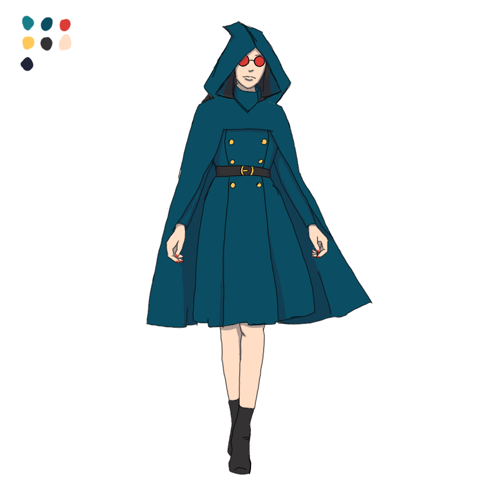

Home > Characters
Zara

About
A Necromancer and Sylvia's niece
Personality
Intelligent, Just, Noble, Optimistic, Rule Follower, Energetic, Overachiver
Major Story Beats
Backstory
Alexandria is a recent graduate from the North American Witch Academy. She is doing her customary post graduate witch internship with the renowned witch
Sylvia.
Design
#5F3C59 - Coat and Hat
#BDBDBD - Silver Elements
Leather - #D1994F
Eyes - #099300
Skin - #E7C3AA